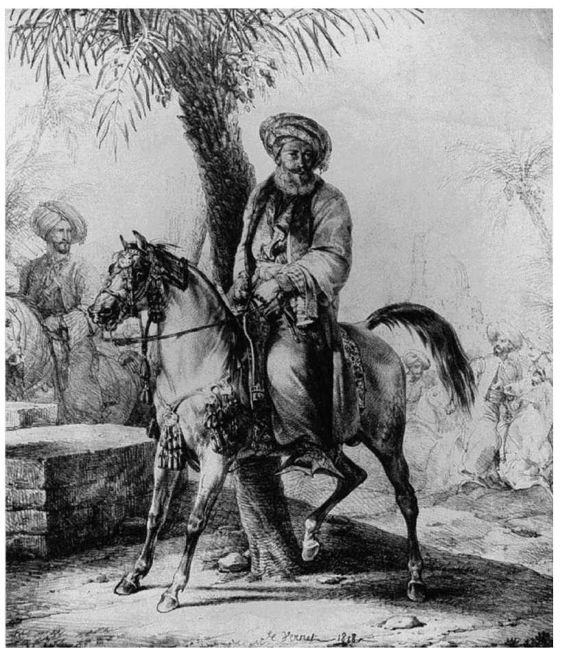

西方对近代阿拉伯世界的影响，可以说从1798年拿破仑率领侵略军在埃及登陆那一天起就已开始。拿破仑的真正目标是打击英国在东方的地位，但是，海军将领纳尔逊在亚历山大附近歼灭拿破仑的舰队之后，拿破仑放弃他的目标回国了。不过他的远征对埃及有着持久的影响，因为这不仅仅是一个军事事件，也是西方对阿拉伯世界中心地区的一次文化入侵。拿破仑除了将解释古代象形文字的科学家和制订把地中海和红海连接起来这一计划的工程师带到埃及外，还给埃及带来了第一台印刷机。
拿破仑在他出征埃及的短暂时间里，还粉碎了埃及既有统治阶级的权力。这为天才的阿尔巴尼亚冒险家穆罕默德·阿里当政铺平了道路。穆罕默德·阿里的历史意义在于，他是第一个意识到西方技术的意义并有效地利用它来为自己的目标服务的中东统治者。他的成就很多，且都是革命性的。他开始兴建埃及近代的灌溉系统；引进棉花的栽培，棉花迅速地成为国家最大的资源；重新开放亚历山大港；鼓励对外贸易；派学生到国外去学习；开办各种学校，尽管他自己是文盲；建立了一所翻译学校，在1835年至1848年间将大约2000本欧洲著作译成阿拉伯语。穆罕默德·阿里还聘请外国专家帮助他建立起中东第一支新式的陆海军。他甚至勇敢地试图在埃及建立一个现代工业结构，而且他的确在开罗和亚历山大兴建了大批工厂。不过，这些企业最后由于国内的不足之处和欧洲诸强国反对埃及扩张和工业化而失败。
不过，这些成就一度使埃及转变为一个可怕的强国。穆罕默德不太费力地侵占了阿拉伯半岛、苏丹、克里特岛和包括今天的以色列、黎巴嫩及叙利亚在内的整个黎凡特海岸地区。他的计划是要在小亚细亚以南的奥斯曼行省以外创立一个阿拉伯帝国。但是，这是英国不能接受的；英国宁愿一个软弱的奥斯曼帝国而不是强大的阿拉伯帝国控制前往印度的路线。穆罕默德为外力所迫，不得不交出除埃及之外的所有属地；不过，在埃及，他仍然是世袭、自主的统治者。大国的利益延迟了阿拉伯的统一和独立，而且将继续延迟一个多世纪。

图215 穆罕默德·阿里（1769—1849年）。在这幅画中，这位著名的埃及总督被描绘成了一位骑手。
[推荐读物]
文献指南有：R. H. Davison所著的The Near and Middle East：An Introduction to History and Bibliography（Service Center for Teachers of History，1959）以及B. Lewis 和P. M. Holt所著的Historians of the Middle East（Oxford University出版社，1962）。
巴尔干和近东地区的通史著作有：L. S. Stavrianos所著的The Balkans Since 1453（Holt，Rinehart and Winston出版社，1958）；B. Jelavich所著的两卷本History of the Balkans（Cambridge University出版社，1983）和B. Lewis所著的The Middle East：A Brief History of the Last2000 Years（Scribner出版社，1996）。关于西方文化对中东的影响，见D. Lerner所著的The Passing of Traditional Society：Modernizing the Middle East（Free出版社，1958）；B. Lewis所著的The Middle East and the West（University of Indiana出版社，1964）和他的Muslim Discovery of Europe（Norton出版社，1982）。关于西方的经济影响，见C. Issawi所编的The Economic History of the Middle East, 1800-1914（University of Chicago出版社，1966）以及J. R. Lampe 和M. R. Jackson所著的Balkan Economic History：1550-1950（Indiana University出版社，1982）。
[注释]
[1]Ch. Photios, Apomnemoneumata peri tes Hellenikes Epanastaseos ［Memoirs on the Greek Revolution］，Vol. I（Athens，1899）, p. 1.